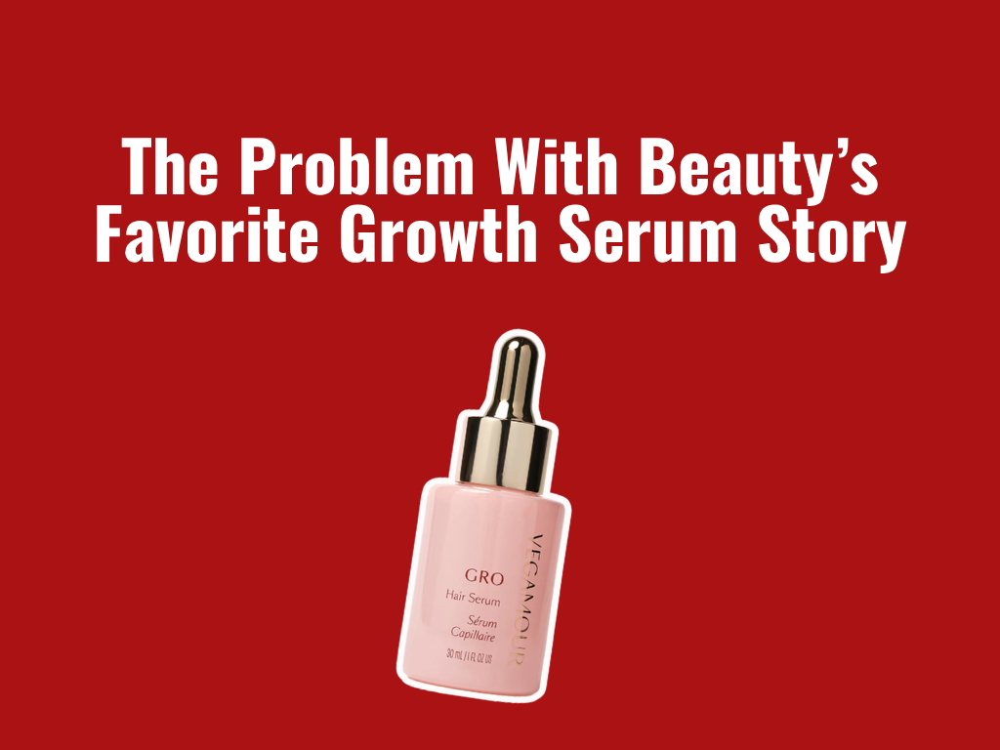
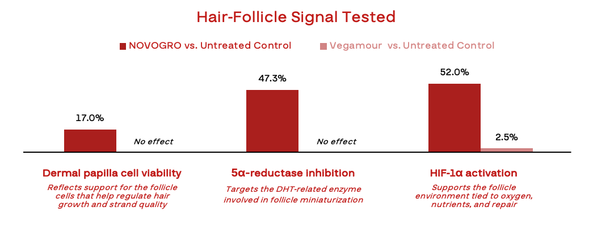
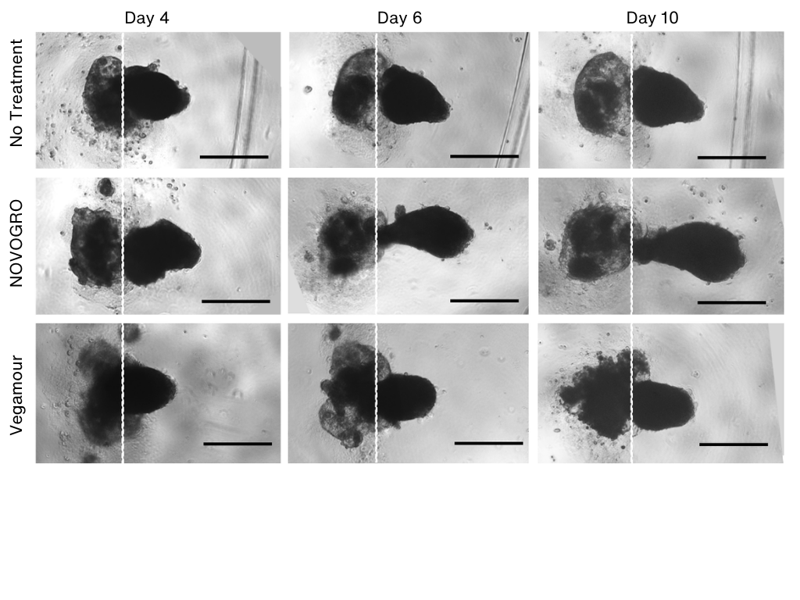
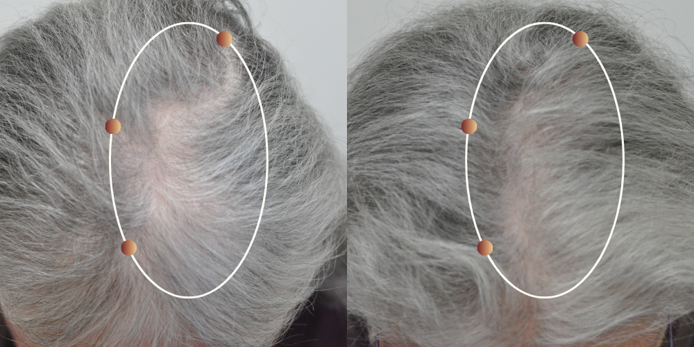

Talk to real cosmetic formulators when the brand team is not in the room, and you’ll start hearing the same uncomfortable thing:
Most hair serums are not built like drugs. They are built like stories.
The beauty industry has gotten very good at making products feel scientific, and the hair serums live in a perfect commercial gray zone. Consumers are scared, hopeful, and willing to be consistent, and brands know that. So they build products around ingredients that are easy to understand, easy to market, and just technical enough to feel credible.
Vegamour leans into this language, describing its product as supporting thinning and shedding concerns, promoting visibly fuller hair in as little as three months, and using natural but allegedly science-backed ingredients as key technologies. It works beautifully as marketing.
While that does not automatically make Vegamour a scam, it makes Vegamour a perfect case study in modern beauty marketing. The real question is, “Does the formula meaningfully interact with the cells that control hair growth?”
That is where the conversation gets much less pretty.
The Beauty Industry’s Favorite Trick: Turning Anxiety Into a Subscription
Hair loss is emotional. Everyone in the industry knows it.
People buy hair serums with anxiety, hope, and a tiny voice in the back of their head saying, “Maybe this one will be different.”
Vegamour understood this lane early.
The brand was founded in 2016 by Daniel Hodgdon and positioned itself as a plant-based hair wellness company. In 2021, it announced an $80 million minority growth investment from General Atlantic, with public messaging focused on plant-based, vegan, naturally derived products and a holistic “inside-out” hair wellness approach.
Public profiles describe Hodgdon as a serial entrepreneur with experience in sustainability, plant-based ingredients, and beauty businesses. The Los Angeles Business Journal also notes that he studied biology, but his public career has largely been in entrepreneurship, beauty, supply chains, and brand building rather than clinical dermatology or drug development.
That is not unusual in beauty. Most beauty companies are not founded by bench scientists.
But it becomes worth noticing when the product is marketed with the glow of science.
Vegamour Is a Lifestyle Position
Vegamour’s pitch is emotionally intelligent.
It speaks to consumers who do not want anything that feels medical, hormonal, or aggressive. They want something that feels safer than pharmaceuticals, more natural than minoxidil, more elegant than a drugstore foam, and more scientific than a bottle of rosemary oil. On paper, Vegamour gave them that.
The brand has publicly discussed avoiding ingredients such as synthetic prostaglandins, steroids, finasteride, bimatoprost, isopropyl cloprostenate, minoxidil, and keratin. That framing invites consumers to fill in the blank: Vegamour must be clean, modern, and safer.
But leaving out controversial ingredients does not automatically make what remains effective.
The Ingredient Stack Looks Expensive. The Proof Gets Thinner Up Close.
The brand’s current GRO Hair Serum page groups its “How It Works” story around three main buckets:
- Plant exosomes
- Oligopeptide-2 and glycoproteins
- Mung bean with red clover
Sephora’s product page also adds turmeric and caffeine as star ingredients.
On paper, each ingredient has a little story attached to it, and together they create the feeling of a complete system. But when you look closer, the evidence gets thinner.
| Vegamour Ingredient Story | What It Sounds Like | The Reality |
|---|---|---|
Plant exosomes | Tiny plant messengers, scalp vitality, hair strength. Very lab-coat chic. | This is still an under-validated category in consumer hair care. “Cell communication” sounds powerful, but the practical question is whether these materials remain stable, penetrate properly, and create measurable follicle changes in humans. |
Oligopeptide-2 and glycoproteins | Bioactives that strengthen strands at the root and support density. | Peptides are popular in skincare. Examples include Drunk Elephant Protini™ Polypeptide Moisturizer, Murad Nutrient-Charged Water Gel, and Isntree EGF Repair Cream. They are not inherently hair-specific. The same beauty vocabulary gets recycled across multiple categories. “Supports the barrier” becomes “supports the scalp.” “Helps skin look firmer” becomes “helps hair look denser.” “Cell communication” becomes “follicle vitality.” There do not appear to be published studies showing that Vegamour’s Nicotiana benthamiana oligopeptide-2 improves hair density. |
Red clover and mung bean | Plant-based phytoactives (a.k.a.plant-based compounds that can do something in a biological system). They are positioned as ingredients that calm and nourish the scalp. | Citing the DHT pathway does not prove Vegamour blocks it. One review found that studies cited around red clover involved a different complex, Capixyl, not the same red clover and mung bean extract described in Vegamour’s formula. |
Caffeine | Helps block DHT and stimulate follicles. | A 2007 study found that caffeine counteracted testosterone-related suppression in cultured human hair follicles, but this was an in vitro follicle model, not a finished Vegamour serum tested on real human scalps. Interesting ingredient, yes. Proof that Vegamour regrows hair, no. |
Turmeric / curcumin | Sounds anti-inflammatory and wellness-coded and is often linked to prolonging the growth phase. | Turmeric alone has not been clearly shown to promote hair growth in men with androgenetic alopecia, except when paired with minoxidil. |
The GRO serum follows a familiar strategy: stack multiple trendy actives together so the product feels complete. Take ingredients with scattered research, borrow the most impressive biological language around them, put them into a polished bottle, then market the whole thing as “science-backed” without clearly proving that the finished formula meaningfully changes hair follicle biology.
The Cell Beauty Marketing Rarely Wants to Discuss
Let’s step back for a second.
At the base of every hair follicle is a tiny but powerful group of cells called dermal papilla cells, or DPCs.
Think of them as the command center of the follicle. They help decide when the follicle enters the growth phase, how long it stays there, and how thick the hair fiber becomes.
When hair thinning progresses, the problem is not just that hair “falls out.” The follicle’s signaling system starts to weaken, and that is why DPC activity matters.
If a product only makes the hair shaft feel smoother, that is cosmetic conditioning. If it reduces scalp irritation, that may help the environment. But if it does not meaningfully affect the follicle’s core signaling machinery, it may never move beyond surface-level support.
And this is where the next generation of hair products starts to separate itself from the old one.
How Vegamour and NOVOGRO™ Compared in Lab Tests
A serious hair-growth formula should start with one blunt question: “What does the follicle actually need?”
Not what looks good on a Sephora page. The follicle is not reading the marketing copy.
In one recent study, researchers used artificial intelligence to identify a set of novel small molecules called NOVOGRO™. According to manuscript data, NOVOGRO™ was screened around multiple follicle-relevant signals, including dermal papilla cell activity, HIF-1α activation, and 5α-reductase inhibition.
Those three areas matter because they hit different parts of the thinning story. Dermal papilla cells help control growth. HIF-1α is tied to the follicle’s support environment. 5α-reductase connects to the DHT pathway, one of the big players in follicle miniaturization.
According to available manuscript data, many commercial serums marketed as “stimulating,” “revitalizing,” or “follicle-supporting” showed minimal impact on dermal papilla cell activity. Vegamour fell into that same pattern.
It barely moved the follicle needle. In two readouts, it even fell below untreated control. NOVOGRO™ looked very different, showing a 17% increase in dermal papilla cell number, 52% HIF-1α activation, and 47% 5α-reductase inhibition versus untreated control.
Hair-Follicle Signal Tested

And the signal did not stop at isolated markers. In a follicle-like lab model, NOVOGRO™-treated structures also became larger than that treated by Vegamour, giving a more visual readout of stronger follicle growth activity.
No treatment

Day 4
Day 6
Day 10
NOVOGRO™
Day 4
Day 6
Day 10
Vegamour
Day 4
Day 6
Day 10
That does not mean the story is finished. Clinical testing is still underway, and that is the part I want to see next.
Because hair care is full of lab glitter. A tiny ingredient study gets stretched into a product claim. A trendy plant extract gets dressed up as science. A polished bottle starts looking more convincing than the data behind it.
Consumers should not have to decode buzzwords, cherry-picked study fragments, and brand-safe language just to figure out whether a serum has a real chance of doing anything meaningful.
The harder thing, and the more honest thing, is showing that the biology actually translates into visible results on real human scalps.
What Happened When RE:YOU Tested It?
RE:YOU’s trial enrolled 190 women aged 35–70 with mild to moderate female pattern hair loss. It was randomized and double-blind, and compared the finished serum with topical minoxidil. That comparison matters: both groups were assessed over the same period, giving the improvements something concrete to be measured against.
In its 90-day interim report, RE:YOU reports 50% greater hair counts and hair density than the minoxidil group. Average shedding fell 56% from baseline on a comb test, a reduction reported as 44% better than minoxidil.
The trial is registered on ClinicalTrials.gov (NCT07785869). That’s a meaningful transparency step: readers can look up the study design, who took part, and what the researchers set out to measure. It gives “clinically tested” something concrete to point to.
on the comb test
in self-assessment
in the comparison trial

The Difference
Vegamour feels like the old beauty playbook with better packaging: take plant-powered ingredients, wrap them in science-coded language, and make the routine feel emotionally safe.
NOVOGRO™ is operating in a more serious category: measurable effects on the systems that decide whether a follicle keeps growing or quietly shuts down.
It is still not hype-proof. Real-world performance still matters. Clinical data still matters. Consumer experience still matters. We still want to see how it performs outside controlled studies, in the hands of real consumers, stylists, formulators, and beauty insiders like us.
But the direction is harder to dismiss.
Beauty has spent years selling people hair-growth feelings. NOVOGRO™ is asking for follicle receipts.
And honestly, that is the conversation this category should have had a long time ago.